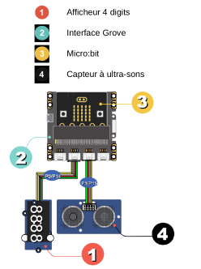

pdf : pour impression
Ce document est grandement inspiré par le livret rédigé par Philippe Leclerc
Introduction
Ce projet vise à vous guider dans l’utilisation du module grove avec le BBC micro:bit. On suppose que vous maîtrisez les fonctions du base : boutons, matrice à LEDs, entrées / sorties).
On suppose aussi que l’utilisation de mu-editor est acquise.
Dans ce TP, nous utiliserons mu-editor, étant donné qu’il permet de manipuler les fichiers présents sur le micro:bit.
Nature du TP
L’expérimentation se fait sous la forme de mini projets pour lesquels on vous présente le principe d’un module, un schéma de raccordement, le code et des observations.
Ensuite un défi vous est proposé.
Cela vous donnera de quoi vous occuper si un module ne fonctionne pas (ce qui arrive) ou s’il n’est pas disponible immédiatement (il y a moins de modules que d’élèves).
Utiliser le module grove

Principe
Le kit Grove, développé par Seeed Studio est constité de une carte d’extension dans laquelle on insère le BBC Micro:bit et de différents éléments qui se raccordent tous de la même manière.


Branchements
Chaque capteur ou actionneur utilisé dans le TP se branche à l’aide d’un câble entre le capteur et la carte d’extension.
Les montages sont donc très simples.
Il est nécessaire d’employer une carte d’extension, mais aussi parfois une alimentation supplémentaire car la carte BBC micro:bit fonctionne en 3.3V tandis que les éléments Grove fonctionnent en 5V.
Seed Studio propose aussi des modules Grove pour les raspberry, arduino qui fonctionnent de manière similaire.
Librairie
L’utilisation de certains modules grove nécessite du code relativement complexe qui est disponible ici :
Ces librairies fournissent des fonctions et méthéodes prédéfinies dont la syntaxe est explicitée à la fin du document.
Téléchargez ces fichiers
Utilisation du module dans mu-editor
Rappel du TP précédent :
Le bouton fichier s’utilise comme ceci :

Cette fonction n’est accesible qu’après avoir chargé un fichier sur la carte.
Dans mu-editor,
- raccordez votre BBC micro:bit et assurez-vous que le script par défaut (Hello, World!) fonctionne.
- Ouvrez les deux scripts
micro_grove.pyetdisplay_4d.pydans mu-editor et enregistrez les dans le dossier par défaut. - Ouvrez le menu
files. Vous devriez voir apparaître les fichiersdisplay_4D.pyetmicro_grove.pyà droite et un seul fichiermain.pyà gauche. - Glissez les deux scripts à gauche.
Vous pouvez maintenant continuer comme d’habitude :
- Vous copiez / éditez le code dans l’éditeur,
- Vous enregistez vos modifications,
- Vous flashez le code vers le BBC micro:bit.
- Vous le redémarrez si rien ne fonctionne normalement (bouton reset au dos.)
Mini-projets
Projet 1 : contrôler la lumière
Nous allons utiliser les boutons du micro:bit pour controler une LED
Montage

Code exemple
from microbit import *
# on défini une variable
etat_led = 0
while True:
if button_a.is_pressed():
# on met la LED a l'état 1 (5V)
etat_led = 1
if button_b.is_pressed():
# on met la LED à l'état 0 (0V)
etat_led = 0
# on copie l'état de la led sur la broche P0
pin0.write_digital(etat_led)
sleep(100)
Appuyer sur A puis sur B pour allumer et éteindre la LED
Approfondissement possible
Que se passe-t-il quand on appuie sur les deux boutons en même temps ?
Comment modifier le programme pour rendre A prioritaire ?
Comment modifier le programme pour allumer et éteindre avec A seulement.
Pensez à was_pushed.
Projet 2 : controler la luminosite
Nous allons utiliser les LEDs de la micro:bit pour afficher une mesure de la luminosité ambiante
Montage

Code exemple
from microbit import *
from micro_grove import luminosite, affiche_jauge
while True:
# on récupère la valeur fournie par le capteur
mesure = luminosite(pin0)
# on affiche le niveau de luminosité sur les leds
affiche_jauge(mesure, 100)
sleep(50)
- Observer les leds lorsqu’on monte et descend la main devant le capteur
- Que se passe-t-il quand on modifie la valeur 100 dans
affiche_jauge?
Projet 3 : éclairage automatique
Nous allons allumer une LED lorsque la nuit tombe
Montage

Code Capteur de luminosité
Code exemple
from microbit import *
from micro_grove import luminosite
while True:
# le capteur est branché sur la broche P1
if luminosite(pin1) < 10:
etat_led = 1
else:
etat_led = 0
# on recopie l'état de la led sur la broche P0
pin0.write_digital(etat_led)
sleep(100)
Vérifier que la led s’allume si on recouvre le capteur.
Approfondissement possible
Modifier le programme pour que la led s’allume plus tôt quand la nuit tombe.
Projet 4 : un peu de musique
Nous allons utiliser les boutons de la micro:bit pour jouer de la musique
Montage

haut parleur Interface Grove Micro:bit
Code Exemple
from microbit import *
from music import *
from micro_grove import bip
# les notes sont définies en Scientific Pitch Notation (SPN).
ma_note = “c4:1" # c’est un DO
while True:
if button_a.is_pressed() and not button_b.is_pressed():
# on joue une note
play(ma_note)
elif button_b.is_pressed() and not button_a.is_pressed() :
# on joue une mélodie pré-enregistrée
play(PUNCHLINE)
elif button_a.is_pressed() and button_b.is_pressed():
# on emet un beep
bip()
sleep(500)
On doit entendre des sons différents quand on appuie sur une touche à la fois
Approfondissement possible
Après une recherche sur internet modifier le programme pour jouer la note “LA” à la place du DO
Ajoute la définition de
la mélodie ma_melodie = [“C4:4”, "D", "E", "C", "C", "D", "E", "C", "E"]
Projet 5 : mouvements
Nous allons utiliser les touches sensitives et les capteurs de mouvement

Montage
Code Exemple
from microbit import *
from music import *
gesture = "x"
while True:
if pin1.is_touched() :
# on joue une melodie
play(PYTHON)
elif pin2.is_touched():
play(ENTERTAINER)
# on surveille les changement de position de la carte
if gesture != accelerometer.current_gesture():
gesture = accelerometer.current_gesture()
if gesture == "left":
play(JUMP_UP)
elif gesture == "right":
play(POWER_UP)
sleep(100)
Touche avec une main l’un des fils (ou la touche directement), puis l’autre.
Penche la carte brièvement à droite ou à gauche.
Approfondissement possible
Complète le programme pour que d’autre mélodies soient jouées quand on lève ou baisse la carte.
On trouveras des informations ici
Projet 6 : gardien des secrets
Description
Dans cette démo, tu vas apprendre à créer une alarme. Si quelqu’un rentre dans ta chambre, une led s’allumera et une “sirène” retentira
Montage
Haut-parleur Interface Grove Micro:bit Capteur Ultra-sons Led rouge
Code exemple
from microbit import *
from micro_grove import mesure_temps_A_R
from music import play
maNote = "F6:1"
while True:
# Valeur fournie par le capteur ultra-sons
t = mesure_temps_A_R(pin1)
distance = t * 0.034328 / 2 # cm
if distance < 100:
# on detecte une présence
for i in range(5):
pin2.write_digital(1)
play(maNote)
sleep(150)
pin2.write_digital(0)
sleep(150)
sleep(500)
Vérifie que quand tu passes ta main lentement devant le capteur à ultra-sons, l’alarme s’enclenche certain temps
Approfondissement possible
Modifie le code pour que l’alarme dure 2 fois plus longtemps, sans changer la fréquence du clignottement.
Modifie de nouveau le code pour que la led clignote 3 fois plus vite.
Projet 7 : de toutes les couleurs
Nous allons utiliser un ruban à LEDs
Il faut alimenter la carte avec les piles pour avoir assez de puissance
Montage
Micro:bit potentiomètre rotatif

Code Exemple
from microbit import *
from micro_grove import *
import neopixel
np = neopixel.NeoPixel(pin1, 30)
np.clear()
rouge = (255, 0, 0)
vert = (64, 255, 12)
magenta = (219, 0, 115)
while True:
if button_a.is_pressed():
couleur = rouge
elif button_b.is_pressed():
couleur = vert
else:
couleur = magenta
# on calcule le nbre de leds à allumer
potentiometre = position_curseur(pin0)
nombre_de_leds = (int)(potentiometre / 3.3)
#on eteint tout
for x in range(30):
np[x] = (0, 0, 0)
# on allume le nombre de leds calculé
for x in range(nombre_de_leds):
np[x] = couleur
# on applique les changements sur le ruban
np.show()
sleep(100)
Observe l’effet d’une action sur le potentiomètre, puis le bouton A et enfin le bouton B
Approfondissement possible
Recherche sur Internet le code RVB de la couleur BLEU, et modifie le programme pour allumer quand on appuie sur le bouton B.
Projet 8 : Métronome
Dans cette démo, tu vas apprendre à créer un métronome qui te donnera le tempo.
Il faut peut-être alimenter la carte micro:bit avec des piles pour avoir suffisament de puissance.
Montage
Code exemple
from microbit import *
from micro_grove import angle_servomoteur
from utime import sleep_us
#on positionne le servomoteur à droite
angle_servomoteur(pin0, 45)
sleep(1000)
#tempo moderato = 60 pulsations par seconde
duree=10400
while True:
if button_a.was_pressed():#on demarre ave le bouton A
while not button_b.was_pressed():# on arrete avec B
for x in range(45, 135,+2):
angle_servomoteur(pin0,x)
sleep_us(duree)
for x in range(135, 45, -2):
angle_servomoteur(pin0,x)
sleep_us(duree)
Avec le chronomètre de ton smartphone, vérifie qu’on obtient bien 60 battements du servomoteur par minute.
Approfondissement possible
Modifie le programme pour obtenir un tempo Moderato à 110 pulsations par minute. Peux-tu expliquer pourquoi on ne peut par obtenir un tempo Prestissimo à 200 pulsations par minutes.
Projet 9 : commande à distance
Dans cette démo, tu vas apprendre à utiliser une deuxième carte microbit pour agir à distance.
Montage
Led Interface Grove Micro:bit réceptrice Micro:bit émettrice
Code : carte émétrice
from microbit import *
import radio
#on choisit un canal
radio.config(channel=22)
radio.on()
while True:
if button_a.was_pressed():
radio.send("Allume")
if button_b.was_pressed():
radio.send("Eteint")
sleep(100)
À toi de jouer S’il y a d’autres cartes microbit qui utilisent a radio à proximité, choist un autre canal entre 0 et 83.
Code : carte réceptrice
from microbit import *
import radio
#on choisit un canal
radio.config(channel=22)
radio.on()
etat_led = 0
while True:
message = radio.receive()
if message == "Allume":
etat_led = 1
if message == "Eteint":
etat_led = 0
pin0.write_digital(etat_led)
sleep(100)
S’il y a d’autres cartes microbit qui utilisent a radio à proximité, choist un autre canal entre 0 et 83. Vérifie que la télécommande fonctionne bien. Essaie de trouver par expérience la portée maximale de la radio.
Approfondissement possible
Ajoute un feedback ! Pour faire ça, affiche l’état de la led (A ou E) sur la matrice
Projet 10 : Éclairage automatique économique
Dans cette démo, tu vas apprendre à allumer un éclairage extérieur quand il fait nuit, mais uniquement si on détecte la présence de quelqu’un. Ça permet d’économiser l’énergie.
Montage

Code exemple
from microbit import *
from micro_grove import *
Capteur de luminosité
etat_led = 0
while True:
# Valeur fournie par le capteur ultra-sons
t = mesure_temps_A_R(pin1)
distance = t * 0.034328 / 2 # cm
# Valeur fournie par le capteur de luminosité
mesure_lum = luminosite(pin2)
if mesure_lum < 10:
# il fait nuit
if distance < 100:
# on detecte une présence
etat_led = 1
else:
# il n'y a personne
if etat_led == 1:
sleep(5000)
etat_led = 0
else:
# il ne fait pas nuit
etat_led = 0
pin0.write_digital(etat_led)
sleep(1000)
Vérifie que la led s’allume quand on recouvre le capteur de luminosité et qu’on passe sa main devant
Approfondissement possible
Peux tu modifier le code pour que la led reste allumée 10 secondes après qu’on s’est éloigné du capteur
Projet 11 : télémètre à ultra-sons
Dans cette démo, tu vas apprendre à mesurer une distance et à l’afficher.
Montage

Capteur à ultra-sons
Codeexemple
from microbit import *
from display_4d import D4AFF7SEG
from micro_grove import mesure_temps_A_R
from math import ceil
aff_4D = D4AFF7SEG(clk=pin0, dio=pin14)
while True:
# le capteur nous fournit le temps d’un
# d’un aller retour des ultra-sons
t = mesure_temps_A_R(pin1)
# on calcule la distance à partir de la vitesse du son
distance = ceil(t * 0.034328 / 2) # cm
aff_4D.affiche(distance)
sleep(500)
Place un objet plat (un livre par exemple) à une distance connue devant le capteur à ultra-sons et vérifie que la valeur affichée sur les afficheurs est cohérente.
Essaie de trouver par expérience la distance maximale qu’on peut mesurer en se plaçant à distance d’un mur.
Approfondissement possible
- Modifie le programme pour afficher la distance en millimètres
- Mesurer la vitesse du son ! En utilisant une distance connue, on peut estimer le temps nécessaire pour un aller retour à l’onde sonore.
Librairies
Cette page regroupe la documentation des librairies
micro_grove.py
mesure_temps_A_R(broche) -> float
- Module grove : Ultrasonic ranger
- Renvoie la durée d’un aller / retour des ultra sons en micro secondes
- Paramètre : Nom de la broche utilisée, (pin1 par défaut)
mesure_temperature(broche, modele: int) -> float
- Module grove : Temperature sensor
- Renvoie la température en degré celsius
- Paramètres : nom de la broche utilisée (pin2 par défaut, version du modèle de de capteur: 0, 1 ou 2 - 0 par défaut)
luminosite(broche) -> float
- Module grove : Light sensor
- Renvoie un entier entre 0 et 100. 100 correspond à 100% soit environ 60 lux
- Paramètre : nom de la broche utilisée (pin 0 par défaut)
it_s_dark(broche) -> float
- Module grove : ligth-sensor
- Renvoie
Truesi la luminosité est inférieure à 10 lux - Paramètre : nom de la broche utilisée (pin 0 par défaut)
position_curseur(broche) -> int
- Module grove : Rotary angle sensor (potentiomètre)
- Renvoie un entier entre 0 et 100 indiquant la position du bouton
- Paramètre : nom de la broche utilisée (pin 0 par défaut)
affiche_jauge(val: float, val_max=100: int) -> None
- Module grove : -
- Utilise la matrice à LEDs
- Affiche une valeur sous forme de jauge (graphe en bâton) sur la matrice à leds
- Paramètre : val (
float) la valeur à afficher,val_maxla plus grande valeur possible, 100 par défaut.
angle_servomoteur(broche = pin0, angle = 0)
- Module Grove - Grove-Servo
- positionne le servomoteur à un 0 < angle < 180 degrés
- Paramètre : Nom de la broche utilisée, angle
display_4d.py
Importer la classe avec :
from display_4d import D4AFFSEG
Initialiser un objet :
aff_4D = D4AFFSEG(clk=pin0, dio=pin14)
Ensuite on peut utiliser les méthodes suivantes :
aff_4D.affiche(valeur)
- Affiche valeur sur les 4 afficheurs
- paramètre
valeur, entier entre -999 et 9999 - exemple
aff_4D.affiche(1234)
aff_4D.affiche_2(heure, minute, separateur)
- Affiche l’heure avec éventuellement un séparateur (
:) - paramètres : heure et seconde des
int - exemple :
aff_4D.affiche_2(20, 30, True)